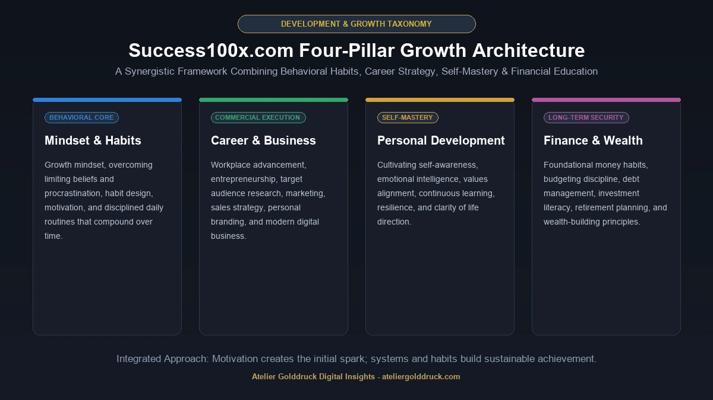
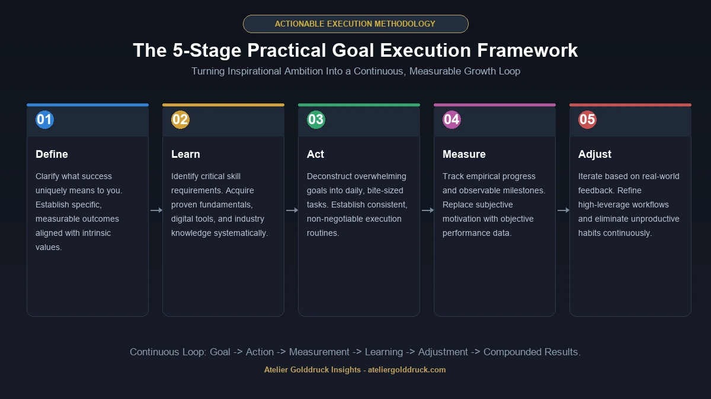

If you have searched for success100x.com, you may be trying to understand what the website is, what kind of information it provides, and whether it is useful for personal growth, career development, business, productivity, or financial education.
Success100x.com is a personal and professional development platform built around the idea of helping readers improve skills, productivity, mindset, career direction, business knowledge, and financial awareness. The website currently describes itself as a resource for personal and professional growth and highlights a combination of AI technology, expert-oriented content, resources, and community-focused development.
Its content is organized around several broad themes, including Mindset & Habits, Career & Business, Personal Development, and Finance & Wealth. The site also publishes individual guides covering subjects such as goal setting, productivity, career skills, financial planning, digital tools, and business development.
That makes Success100x.com broader than a website focused on one particular definition of success.
It is better understood as a general personal-growth and professional-development resource where different types of readers can explore ideas related to improving their work, habits, knowledge, and long-term goals.
What Is Success100x.com?
Success100x.com is an online platform focused on personal development, career growth, business, productivity, mindset, skills, and finance.
The site's own description says its goal is to help users amplify their potential through tools, resources, inspiration, AI technology, expert insights, and community-oriented support.
Its content spans both personal and professional subjects.
For example, the site publishes material about:
- Mindset and habits
- Personal development
- Career planning
- Business growth
- Goal setting
- Productivity
- Financial habits
- Wealth-related topics
- Digital skills
- Artificial intelligence
- Professional skills
- Online tools
- Entrepreneurship
This broad scope is important when understanding the success100x.com search intent.
Someone looking for the site may not necessarily be searching for one particular course or product. They may simply want to discover what Success100x offers and whether its resources are relevant to their goals.
What Does “Success100x” Mean?
The name Success100x suggests the idea of multiplying or dramatically improving results.
But it is useful to distinguish the brand name from a literal promise.
“100x” should not automatically be interpreted as a guarantee that a user will multiply their income, productivity, business revenue, or personal achievements by one hundred.
In practical terms, the site's content focuses on familiar principles of personal and professional improvement:
- Setting meaningful goals
- Developing useful habits
- Building skills
- Improving productivity
- Learning continuously
- Making better career decisions
- Understanding business fundamentals
- Managing money more effectively
The most useful way to approach the concept is therefore leverage: finding habits, systems, knowledge, tools, and decisions that can create disproportionately better outcomes over time.
What Topics Does Success100x.com Cover?
The current Success100x.com site organizes its main content around four major areas:
- Mindset & Habits
- Career & Business
- Personal Development
- Finance & Wealth

These categories overlap naturally.
For example, improving your career may require better habits. Starting a business may require financial knowledge. Building wealth may require both financial discipline and long-term personal development.
Let's look at each area.
1. Mindset & Habits
The Mindset & Habits section focuses on the behavioral side of achievement.
The site currently features content about subjects such as:
- Growth mindset
- Limiting beliefs
- Procrastination
- Positive thinking
- Goal setting
- Daily habits
- Productivity
- Motivation
One published Success100x guide explores the relationship between mindset and habits, arguing that the way people interpret challenges can influence the actions they take repeatedly.
That is an important distinction.
Motivation can help someone start.
Habits are what make behavior repeatable.
For example, someone may decide:
“I want to become better at writing.”
That is an intention.
A more useful system might be:
Write for 30 minutes every weekday, review one piece each Friday, and track progress for three months.
The second approach turns a vague ambition into a repeatable behavior.
2. Career & Business
Career and business development is another major Success100x category.
The current Career & Business section includes subjects such as professional development, online education, branding, workplace skills, technology, and business strategy.
This category can be useful for readers who are:
- Looking for a new career direction
- Developing professional skills
- Starting a business
- Improving their marketing knowledge
- Building a personal brand
- Learning about digital business
- Exploring new career opportunities
The site's career-and-business material also discusses areas such as target audiences, marketing, sales, branding, digital marketing, and business development.
The broader lesson is that career success is rarely based on one skill.
It usually comes from combining technical ability with communication, adaptability, problem solving, networking, and the ability to understand business needs.
3. Personal Development
Personal development is another core part of the Success100x identity.
Its personal-development material discusses topics such as:
- Self-awareness
- Self-discovery
- Emotional intelligence
- Learning
- Confidence
- Goal setting
- Personal growth
- Continuous improvement
A Success100x personal-development guide describes self-awareness and self-discovery as foundations for understanding one's values, strengths, weaknesses, interests, and behavior.
This matters because personal development isn't simply about becoming “more productive.”
Sometimes the more useful question is:
Productive toward what?
A person can become extremely efficient at tasks that don't actually move them toward their larger goals.
Self-awareness helps create that connection between daily activity and long-term direction.
4. Finance & Wealth
Success100x.com also has a dedicated Finance & Wealth category.
Current content includes topics related to:
- Financial habits
- Budgeting
- Investing
- Debt management
- Retirement planning
- Digital wallets
- Lending
- Economic trends
- Wealth-building concepts
One Success100x guide on financial success discusses areas including budgeting, investing, debt management, and retirement planning.
This section should be viewed as educational content rather than personalized financial advice.
Financial decisions depend on factors such as:
- Income
- Expenses
- Debt
- Risk tolerance
- Location
- Tax situation
- Time horizon
- Financial goals
A general article cannot account for all of those variables.
Success100x.com and Artificial Intelligence
AI is another part of the platform's broader positioning.
Success100x describes its offering as including AI technology alongside resources, expert insights, and community-oriented development.
That makes sense given how closely AI is now connected with:
- Productivity
- Writing
- Research
- Business
- Career development
- Learning
- Creativity
- Automation
For example, an individual might use AI to brainstorm ideas, summarize information, practice communication, analyze data, or automate repetitive work.
But AI should be treated as an assistant rather than an automatic source of truth.
Important information still needs verification.
Goal Setting on Success100x.com
Goal setting appears repeatedly throughout the site's content.
One Success100x article focuses specifically on success factors and discusses clear goals, adaptability, determination, focus, and continuous learning.
A practical goal-setting system can be much simpler than many motivational frameworks make it sound.
Start with four questions:
What do I want?
Make the desired result specific.
Why does it matter?
Connect the goal to something meaningful.
How will I measure progress?
Choose a number, milestone, or observable result.
What is the next action?
Turn the goal into something you can actually do today.
For example:
Weak goal:
“I want to become healthier.”
Stronger goal:
“I will walk for 30 minutes five days a week for the next eight weeks.”
The second goal gives you something concrete to execute and measure.
Breaking Big Goals Into Smaller Tasks
One of the most practical ideas associated with the Success100x content ecosystem is breaking large ambitions into manageable actions.
This is especially useful because big goals can create a strange psychological problem: they can be inspiring and overwhelming at the same time.
Imagine saying:
“I want to start a successful company.”
That's a destination, not a task.
The practical version might look like:
- Identify the target customer.
- Research the problem.
- Analyze competitors.
- Define the initial offer.
- Build a simple prototype.
- Test it with potential customers.
- Collect feedback.
- Improve the offer.
- Begin acquiring customers.
Suddenly, the huge goal becomes a series of smaller decisions.
Success100x also has dedicated content around breaking large goals into manageable tasks.
Success100x.com for Career Development
Career development is no longer simply about getting a degree and staying in one role for decades.
Technology changes industries quickly.
That makes continuous learning increasingly important.
Success100x publishes career-oriented material around topics such as professional skills, digital literacy, leadership, and future-focused career development.
A practical career-development framework might include:
Technical skills
Learn the tools and technologies relevant to your field.
Communication
Practice writing, speaking, presenting, and listening.
Problem solving
Learn to approach unfamiliar problems systematically.
Digital literacy
Understand modern software, data, AI, and online collaboration.
Adaptability
Be prepared to learn when your industry changes.
Professional visibility
Build a credible portfolio, resume, profile, or body of work.
This combination can be more valuable than focusing exclusively on one technical skill.
Success100x.com for Entrepreneurs
Entrepreneurs can approach the platform from a different angle.
Instead of looking for one “secret” to business success, it is more useful to study the components that repeatedly appear in successful businesses.
These include:
- Customer research
- Product-market fit
- Positioning
- Pricing
- Marketing
- Sales
- Operations
- Financial management
- Customer retention
- Team building
Success100x's business-related material includes topics around market research, target audiences, competitive analysis, marketing, sales, and business development.
A useful starting point is to validate the problem before investing heavily in the solution.
Ask:
Who has this problem?
How are they solving it today?
What does the existing solution cost?
What would make them switch?
Would they actually pay for a better alternative?
These questions are often more valuable than simply trying to “scale” an unvalidated idea.
Success100x.com and Productivity
Productivity is another natural connection.
But productivity isn't simply about completing more tasks.
A better definition is:
Making meaningful progress with the resources you have.
That means distinguishing between:
- Busy work
- Important work
- Urgent work
- High-leverage work
For example, spending three hours reorganizing a task-management application might feel productive.
Spending those same three hours completing the project the system was supposed to help you manage is probably more valuable.
Useful productivity practices include:
- Time blocking
- Prioritization
- Focus sessions
- Task batching
- Weekly reviews
- Limiting unnecessary notifications
- Automating repetitive work
- Setting realistic daily targets
Is Success100x.com a Course Platform?
The current website presents itself primarily as a broader personal and professional growth platform rather than simply one standalone online course.
Its description refers to tools, resources, inspiration, AI technology, expert insights, and community support.
The contact page also references questions about services, coaching programs, and technical support.
Because offerings can change, readers should check the current website directly if they are specifically looking for a particular course, coaching service, or paid product.
Is Success100x.com Useful for Beginners?
It can be.
The broad nature of the site makes it accessible to people who are still figuring out what they want to learn.
A beginner might start with:
- Goal setting
- Productivity
- Personal development
- Career planning
- Basic financial concepts
- Business fundamentals
- Digital skills
The key is not to consume endless motivational content without taking action.
A better learning cycle is:
Read → understand → apply → measure → adjust.
For example, after reading about time management, don't immediately open another article.
Try one technique for a week.
Then decide whether it actually improved your work.
Is Success100x.com Reliable?
The answer depends on the type of information you're looking for.
For general personal-development ideas, productivity concepts, career discussions, and introductory business topics, the site can be treated as an educational resource.
For high-stakes subjects, however, you should verify information independently.
This is particularly important for:
- Investment decisions
- Tax questions
- Legal issues
- Medical information
- Cybersecurity
- Major business decisions
The site's Finance & Wealth category contains educational material about topics such as investing and financial management, but general online content should not be mistaken for personalized financial advice.
A useful rule is:
Use general content to learn what questions to ask. Use authoritative sources to make important decisions.
Does Success100x.com Guarantee 100x Results?
No responsible reader should interpret the “100x” branding as a guaranteed financial, business, or personal result.
The competitor article you provided uses examples claiming extremely large outcomes from unnamed users. Those claims are not something I would present as established facts without evidence.
Success is affected by factors such as:
- Starting position
- Resources
- Market conditions
- Skill level
- Timing
- Execution
- Competition
- Luck
- Personal circumstances
A framework can improve decision-making.
It cannot guarantee a particular outcome.
That distinction makes a success platform much more useful because it keeps expectations realistic.
The Most Practical Success100x Framework
If you want to turn the general themes on Success100x into an actionable system, consider five stages.

1. Define
Decide what success actually means to you.
Don't borrow somebody else's definition.
2. Learn
Identify the skills and knowledge needed to move forward.
3. Act
Turn knowledge into repeated behavior.
4. Measure
Track outcomes rather than relying entirely on motivation.
5. Adjust
Change your approach when the evidence shows that something isn't working.
This creates a continuous improvement loop:
Goal → Action → Measurement → Learning → Adjustment → Better Action
That is a more realistic interpretation of “100x” thinking than expecting overnight transformation.
Success100x.com vs. Generic Motivation Websites
There is a meaningful difference between motivation and development.
| Motivation | Development |
|---|---|
| Makes you feel inspired | Builds a useful capability |
| Focuses on emotion | Focuses on action |
| Often short-lived | Compounds over time |
| “You can do it” | “Here's how to do it” |
| Encourages action | Measures and improves action |
The strongest value of a platform such as Success100x comes when inspirational ideas are turned into actual behavior.
Reading about discipline is not the same as practicing discipline.
Reading about entrepreneurship is not the same as talking to customers.
Reading about investing is not the same as understanding risk.
The gap between knowledge and execution is where most of the work happens.
Success100x.com: Main Categories at a Glance
| Category | What You Can Explore |
|---|---|
| Mindset & Habits | Motivation, habits, mindset, procrastination, goals |
| Career & Business | Careers, entrepreneurship, marketing, leadership |
| Personal Development | Self-awareness, emotional intelligence, personal growth |
| Finance & Wealth | Money habits, investing, budgeting, wealth concepts |
| AI & Digital Tools | AI, productivity, technology and online tools |
| Goal Setting | Planning, milestones, progress and achievement |
The first four categories are explicitly presented on the current Success100x.com homepage.
How to Get More Value From Success100x.com
If you decide to use the site, don't try to read everything.
Start with one problem.
For example:
“I struggle with procrastination.”
Find relevant material.
Then create a small experiment:
Week 1: Identify what triggers procrastination.
Week 2: Introduce focused work sessions.
Week 3: Measure how much work gets completed.
Week 4: Keep what works and remove what doesn't.
This approach turns passive reading into active learning.
The same process works for career development, financial education, business planning, and personal habits.
Who Is Success100x.com For?
The site's broad subject range means it can potentially serve several audiences.
Students
For learning habits, career preparation, productivity, and professional skills.
Professionals
For career development, workplace skills, productivity, and personal growth.
Entrepreneurs
For business fundamentals, marketing, market research, and strategy.
Personal Development Readers
For mindset, habits, self-awareness, and goal setting.
People Learning About Finance
For introductory concepts around money, wealth, budgeting, and investing.
Lifelong Learners
For exploring new subjects and building skills over time.
What Success100x.com Does Well
Several aspects of the platform make its approach easy to understand.
Broad subject coverage
The site combines personal development with career, business, and financial topics.
Practical orientation
Much of the content is structured around goals, habits, skills, and actions.
Multiple entry points
A reader can approach the platform through mindset, career, business, personal development, or finance.
Modern technology focus
The platform explicitly mentions AI technology and digital tools within its broader offering.
Goal-oriented content
Goal setting and achievement are recurring themes throughout the site's content.
What to Keep in Mind
A balanced assessment also means recognizing the limitations of this type of platform.
General Advice Is Not Personalized Advice
An article cannot know your complete financial, professional, or personal situation.
Success Takes Time
Reading about a strategy does not create the result by itself.
Information Changes
Financial, career, technology, and business information can become outdated.
Not Every Strategy Works for Everyone
A productivity technique that works brilliantly for one person may be ineffective for another.
Verify High-Stakes Information
Use primary and authoritative sources before making important decisions.
Frequently Asked Questions About Success100x.com
What is Success100x.com?
Success100x.com is a personal and professional development website covering areas such as mindset, habits, career, business, personal development, finance, productivity, and skills.
What does Success100x.com offer?
The platform describes its offering in terms of tools, resources, inspiration, AI technology, expert insights, and community-oriented support.
What are the main Success100x.com categories?
The current website highlights Mindset & Habits, Career & Business, Personal Development, and Finance & Wealth.
Is Success100x.com about personal development?
Yes. Personal development is one of the platform's main subject areas, with content covering self-awareness, growth, emotional intelligence, habits, and related topics.
Does Success100x.com cover business?
Yes. The Career & Business section covers subjects related to entrepreneurship, marketing, professional development, business strategy, and career growth.
Does Success100x.com cover finance?
Yes. Its Finance & Wealth category includes topics involving financial habits, investing, budgeting, lending, digital wallets, and broader financial issues.
Does Success100x.com use AI?
The platform explicitly describes AI technology as part of its broader offering.
Can Success100x.com guarantee 100x growth?
No. The “100x” concept should not be treated as a guaranteed financial or business outcome. Results depend on individual circumstances, execution, market conditions, and many other variables.
Is Success100x.com suitable for beginners?
It can be useful for beginners because its content covers introductory subjects across personal growth, careers, business, productivity, and finance.
Is Success100x.com a financial advice website?
It publishes finance and wealth-related educational content, but general online articles should not be treated as personalized financial advice. Important financial decisions should be based on your own circumstances and authoritative sources.
Can Success100x.com help with goal setting?
Goal setting is one of the recurring themes in its content, including material about breaking goals into manageable tasks and understanding factors that influence achievement.
Final Verdict: What Is Success100x.com Really About?
Success100x.com is best understood as a broad personal and professional growth platform rather than a website built around one single “success formula.”
Its current content covers mindset and habits, career and business, personal development, finance and wealth, along with related subjects such as productivity, goal setting, AI, digital skills, and professional development.
The “100x” idea is best interpreted as an emphasis on improving outcomes through better decisions, systems, habits, knowledge, and leverage—not as a promise that every user will achieve a literal 100-fold result.
That distinction matters.
The most useful way to approach Success100x is to pick a specific problem, learn from relevant material, apply one or two ideas, measure what happens, and adjust.
In other words:
Don't just consume success content. Turn it into a system you can actually use.
That is where the real value of a platform like Success100x.com begins.
For more such useful information read our site ateliergolddruck.com